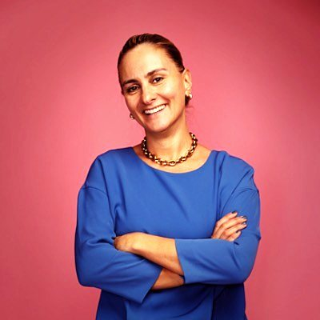

Dr Nara Daubeney
PhD, MBBS, MRCS (Eng), MEd (Surg), DIC, FRCS (Orl-HNS), DLO
Consultant ENT surgeon and entrepreneur based in London.
The Dokkcast is hosted by Dr Nara Daubeney, who leads accessible, evidence-led conversations with medical and healthcare specialists. As a doctor, Nara approaches every conversation with clinical understanding, curiosity and a commitment to making reliable health information easier to access.
Background
Nara obtained her medical degree at Imperial College and Charing Cross Hospital. She is a member and fellow of the Royal College of Surgeons, with a Masters in Education and a postgraduate surgical diploma in ENT.
She holds a PhD in immunology from Imperial College and has considerable expertise in autoimmunity, and she has held a number of previous roles within the national healthcare landscape.
Innovation and enterprise
Nara previously founded and led medical services companies. She is one of the founding members of Phaim and an experienced entrepreneur and healthcare innovator.
She is passionate about bringing novel therapies and digital healthcare applications to market, and about nurturing the next generation of leaders and innovators.
Roles and affiliations
- Royal College of Surgeons Tutor and Fellow
- Honorary Secretary of ENTUK
- Clinical Lead for Innovation at the Royal Society of Medicine
- Public governor at Chelsea & Westminster Hospital Foundation Trust
- Mentor for the BioIndustry Association
Phaim Pharma
Nara has been instrumental in growing Phaim from a UK start-up into a growth company with trials in type 1 diabetes and a discovery pipeline in multiple autoimmune diseases.
Phaim Pharma is a UK-based company developing potentially curative treatments for autoimmune diseases. Its work includes a novel therapy to treat and prevent type 1 diabetes and a predictive biomarker kit for first-degree relatives of people with type 1 diabetes, with an active research and development programme aimed at extending its platform to other autoimmune diseases, such as psoriasis.